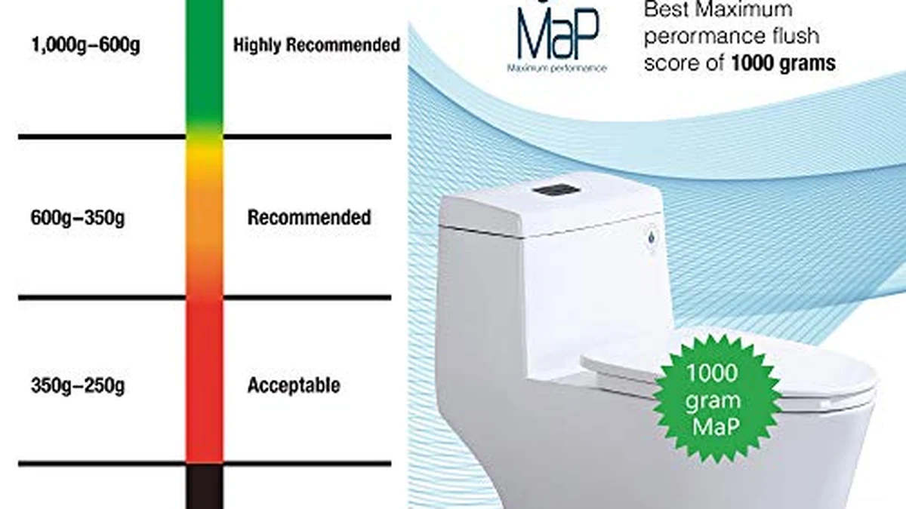

Best One Piece Toilets of 2026: 7 Top Picks
Prices and picks verified as of September 2026. Independent, reader-supported reviews.


Quick Answer
For most bathrooms, the WOODBRIDGE one-piece toilet is the best choice: a comfort-height, elongated bowl from a recognized brand that ships with a soft-close seat already included, so there is nothing extra to buy. If you want to spend less, the Sonderzone at $199.99 is the cheapest model we would actually put in our own home, and the DeerValley at $240.80 is the best value from a name you can look up.
Our pick: WOODBRIDGEE One Piece Toilet with — $318.93 Check Price on Amazon
Bottom line: our top pick is the WOODBRIDGEE One Piece Toilet with Soft Closing Seat at $316.85. The best budget option is the Sonderzone Elongated One Piece Toilet for Bathroom at $180.99.
Things to Know Before You Buy
- Measure your rough-in before you buy anything. That is the distance from the finished wall to the center of the drain bolts on the floor. Standard is 12 inches and most toilets here fit it, but some bathrooms are built for 10. Get it wrong and the toilet will not sit against the wall.
- One-piece means heavy. Because the tank and bowl are molded as one seamless unit, these units commonly weigh 80 to 120 pounds in the box. There is no lifting the tank on separately, so plan on a second set of hands for the carry-in and the set.
- Elongated bowls are more comfortable; round bowls save space. Every pick on this list is elongated, which most adults prefer, but an elongated bowl adds a couple of inches of depth. In a very tight powder room, measure your clearance to the door.
- Comfort height helps taller and older users. A comfort or chair height seat sits around 17 inches off the floor instead of the standard 15, which is easier on the knees to sit and stand. It is also the ADA-referenced range.
- Check whether the seat is included. Some of these ship with a soft-close seat in the box (our top pick does); others sell the seat separately, which adds $25 to $50. We call this out for every product.
- Dual-flush saves water. A dual-flush toilet gives you a light flush near 1.1 gallons for liquid and a full flush near 1.6 gallons for solids. Over a year that adds up, and a strong siphon or vortex flush clears the bowl in one press.
A one-piece toilet is the quiet upgrade that makes a bathroom feel finished. Because the tank and bowl are cast as a single seamless unit, there is no tank-to-bowl seam collecting grime or slowly weeping onto the floor, the profile is lower and sleeker, and you can wipe the whole thing down in one pass instead of chasing dust into a crevice you can barely reach. The trade-off is real: one-piece toilets are heavier and awkward to carry, and they cost more than the two-piece equivalent. But for a fixture you will use every day for fifteen years, most people decide the cleaner look and easier upkeep are worth it.
The problem is that the listings all blur together. Search "one-piece toilet" on Amazon and you get a wall of near-identical white units from brands you have never heard of, all claiming a "powerful flush" and a "modern design," priced anywhere from $180 to $400 with no obvious reason for the gap. We looked at 24 of them currently in stock, cross-checked the specs that actually predict whether you will be happy (rough-in, bowl shape, seat height, flush type, and whether the seat is even included), and narrowed the field to seven picks that cover the budgets and bathroom sizes most people are shopping.
Our pick for most bathrooms is the WOODBRIDGE one-piece: a comfort-height, elongated model from a brand that has earned a real reputation, and it includes the soft-close seat so your $318.93 is the whole price. But the right toilet depends on your room and your rough-in, so below we explain how we picked, then walk through each model, what it is best for, and its honest flaws.
Why You Should Trust Us
This guide is written and maintained by Ilane Tall, who runs a network of bathroom-focused review sites and has spent years comparing fixtures on the numbers that actually predict satisfaction rather than the marketing copy. We do not run a fake testing lab, and we did not bolt seven toilets to a warehouse floor. What we do is read every spec sheet, cross-check the rough-in, bowl shape, seat height, and flush rating against the listing photos and the owner reviews, flag the complaints that keep coming up, and refuse to recommend anything we would not install in our own home. When a listing is vague about whether the seat is included or what the rough-in is, we treat that as a strike, not a detail to gloss over. Our Amazon commissions never change a ranking.
How We Picked
We started with roughly two dozen one-piece toilets in stock on Amazon between $180 and $400, then applied a few hard filters. First, the important specs had to be stated: a toilet listing that will not tell you its rough-in or seat height is hiding something, and we dropped several on that alone. Second, we prioritized elongated bowls and comfort or chair height seats, because that is what most adults find comfortable, while keeping one genuinely compact pick for small bathrooms. Third, we weighed the flush: a one-piece toilet lives or dies on whether a single press clears the bowl, so we favored siphon and vortex designs and dual-flush systems with a real 1.6-gallon full flush. Finally we looked at value honestly, which means a $199 toilet only made the cut if it did the basics well, and a $359 toilet had to earn the premium with looks, a better flush, or an included seat. We ended with seven: a best-overall, a value runner-up, a budget pick, and four "also great" models for specific needs.
How We Compared
To be straight with you: we did not install all seven in a lab, and any site that claims it flushed golf balls down two dozen toilets is inventing a story. What we did instead is the research most buyers do not have time for. We read the full spec sheet for every model, then read through the owner reviews looking for the patterns that matter after installation, not on day one, things like a seat that loosens, a flush that needs a second press, a gasket that seeps, or a rough-in that did not match what the listing implied. We cross-referenced dimensions against the photos to catch listings that quietly show a two-piece in a "one-piece" result, and we confirmed each pick was actually in stock and shipping. Where a spec could not be verified, we say so rather than guessing. The result is a shortlist built on what these toilets are really like to live with, at the specs the makers publish.
Our Picks

WOODBRIDGEE One Piece Toilet with
What we like
- Soft-close seat included in the box, so $318.93 is the whole price with nothing to add
- Comfort (chair) height and an elongated bowl, the combination most adults find easiest to use
- WOODBRIDGE is an established one-piece brand with a real support and parts track record
- Seamless skirted body wipes clean in one pass, no tank-to-bowl seam to scrub
Flaws but not dealbreakers
- Heavy one-piece unit, plan on two people for the carry-in and the set
- Built for a standard 12-inch rough-in only, so measure before you order
| Material | — |
| Size | — |
The WOODBRIDGE is our top pick because it removes the two things that trip people up with cheaper one-piece toilets: an unknown brand and a seat you have to buy separately. WOODBRIDGE has spent years building one-piece toilets, so if a fill valve fails in year three you can actually find the part, and the soft-close seat is already in the box, quietly closing itself instead of slamming. You get a comfort-height, elongated bowl, which is the setup most adults reach for, and a seamless skirted body that you can wipe from tank to base in a single pass.
It is not the cheapest toilet here, and like every one-piece it is heavy and awkward, so budget for a helper on install day. It is also built for the standard 12-inch rough-in, which covers most American bathrooms but not all, so measure that distance from the wall to the drain bolts before you commit. Get those two things right and this is the toilet we would put in our own home without a second thought.

DeerValley Elongated One-Piece Toilet with
What we like
- Under $250 from DeerValley, an established bathroom brand rather than an anonymous seller
- ADA comfort chair height plus an elongated bowl, comfortable for tall and older users
- Dual-flush design to save water on the light flush
- Clean skirted look that hides the trapway and wipes down easily
Flaws but not dealbreakers
- Confirm the seat is included before ordering, some DeerValley listings sell it separately
- Heavy one-piece unit that is awkward for one person to maneuver into place
| Material | — |
| Size | 18.2" H with Dual Flush |
The DeerValley is our value runner-up, and the key word is value, not cheap. At $240.80 it undercuts our top pick by nearly $80 while still coming from a brand you can actually look up, which matters a lot when a fill valve or flush mechanism eventually needs a part. You get the same core recipe most people want: an ADA comfort chair-height seat that is easier on the knees, an elongated bowl, and a dual-flush system so the light flush uses noticeably less water.
The reason it is the runner-up and not the winner comes down to the seat: check the specific listing to confirm a seat is included, because a separate seat can quietly erase part of the savings. And as with every one-piece here, it is a heavy single unit, so do not plan on wrestling it into a tight bathroom alone. If your priority is a legitimate brand at the lowest sane price, this is the one to beat.

HOROW T0338WM Elongated One Piece
What we like
- Matte white finish that reads as high-end and hides water spots better than gloss
- ADA-height, elongated bowl with a genuinely modern low-profile silhouette
- Dual-flush system for water savings on the light flush
- Standard 12-inch rough-in, so it drops into most bathrooms
Flaws but not dealbreakers
- The most expensive pick here at $359, you pay for the look
- Matte surfaces can need a gentler cleaning routine than glossy porcelain
| Material | — |
| Size | 12" Rough-in |
The HOROW T0338WM is the pick for people who care what the toilet looks like. The matte white finish is the star, it reads as boutique-hotel rather than builder-grade, and it hides the water spots and fingerprints that show up fast on glossy porcelain. Underneath the styling it is a properly specified toilet: ADA seat height, an elongated bowl, a dual-flush system, and a standard 12-inch rough-in so it fits the same space as everything else on this list.
At $359 it is the priciest model we recommend, and you are paying for design rather than a better flush, so if aesthetics are not a priority the DeerValley or WOODBRIDGE give you more toilet per dollar. The matte surface also rewards a gentler cleaning routine, no harsh abrasives, to keep it looking even. But if you are renovating and the fixtures are supposed to feel considered, this is the one that looks the part.

St. Tropez One Piece Elongated
What we like
- Dual Vortex flush with a strong 1.6-gallon full flush and a 1.1-gallon light flush
- Fits a 10-inch rough-in, which many older bathrooms need and most toilets cannot
- Elongated bowl and a clean skirted body
- Swiss Madison St. Tropez line has a solid owner track record
Flaws but not dealbreakers
- Confirm your rough-in, the 10-inch version is a different part number than the 12-inch
- Seat may be sold separately, check the listing before you assume it is included
| Material | — |
| Size | 10" Rough-in |
The Swiss Madison St. Tropez earns its spot on two counts. First, the flush: the Dual Vortex system pairs a 1.1-gallon light flush with a strong 1.6-gallon full flush, and the vortex swirl is designed to clear the bowl in one press rather than leaving you reaching for the handle again. Second, and this is the quiet hero feature, it is available in a 10-inch rough-in, which a lot of older homes were built for and which most one-piece toilets simply do not offer. At $252.93 it sits right in the value sweet spot.
The catch is that the 10-inch and 12-inch versions are different products, so measure your rough-in and order the matching one, because a mismatch is exactly the mistake this toilet exists to prevent. As with several models here, confirm whether the seat is in the box before you check out. If saving water without sacrificing flush power is your priority, or your bathroom needs that 10-inch rough-in, this is the pick.

HOROW T0338W Compact One Piece
What we like
- Compact footprint designed to fit tight bathrooms without a cramped feel
- Still delivers a 17.3-inch ADA chair height, so small does not mean uncomfortable
- Lowest price among our HOROW picks at $228.99
- Seamless one-piece body, easy to clean in a room where access is limited
Flaws but not dealbreakers
- Compact bowl is shorter front-to-back than the full elongated models here
- Standard 12-inch rough-in only, measure before ordering
| Material | — |
| Size | 12" Rough-in |
The compact HOROW T0338W solves a specific problem: fitting a comfortable toilet into a bathroom that does not have room for a full elongated model. The clever part is that HOROW shrank the footprint without dropping the seat down to standard height, so you still get a 17.3-inch ADA chair height that is easy to sit down on and stand up from, in a body that takes up less floor. At $228.99 it is also the most affordable of our HOROW picks.
The trade-off is exactly what makes it fit: the bowl is shorter front-to-back than the roomy elongated units elsewhere on this list, so if you have the space, a full elongated model is more comfortable. It also uses a standard 12-inch rough-in, so measure first. But for a powder room or a tight second bath, this is the toilet that gets you comfort height without eating the whole floor.

Sonderzone Elongated One Piece Toilet
What we like
- Lowest price on the list at $199.99, and it still does the basics well
- Elongated bowl and a modern 17.3-inch height, not a bare-bones builder unit
- Seamless one-piece body with the easy-clean look of pricier models
- A sensible pick for rentals and second bathrooms where you do not want to overspend
Flaws but not dealbreakers
- Sonderzone is a lesser-known brand, so parts and support are less certain long term
- Seat is likely a separate purchase, factor $25 to $50 into the real total
| Material | — |
| Size | — |
The Sonderzone is our budget pick, and we want to be clear about what that means: it is the lowest-priced one-piece here that we would still install ourselves, not a warning-label special. For $199.99 you get an elongated bowl and a modern 17.3-inch height, so it looks and sits like a far more expensive toilet, with the same seamless easy-clean body. For a rental, a basement bath, or anyone who just needs a solid toilet without spending $300-plus, it is a genuinely sensible buy.
What you give up at this price is the safety net. Sonderzone is not a name with a decade of parts availability behind it, so if something fails in a few years you may be more on your own than with WOODBRIDGE or DeerValley. And you should assume the seat is a separate $25-to-$50 purchase, which narrows the real gap to the DeerValley. Go in with those two expectations and it is a lot of toilet for the money.

One-Piece Toilet for Bathroom Comfort
What we like
- True 16-inch comfort height, the sweet spot between standard and full chair height
- Elongated bowl for more seating room
- Dual-flush system to cut water use on the light flush
- Mid-pack $249.99 price for a comfort-height, dual-flush combination
Flaws but not dealbreakers
- Sold under a lesser-known brand, so long-term parts support is less certain
- Confirm the seat is included, several listings in this range sell it separately
| Material | — |
| Size | 16" H & Dual Flush & Elongated |
This comfort-height one-piece is for people who find standard toilets too low but do not necessarily want the full 17-inch chair height. Its 16-inch seat is the middle ground a lot of buyers actually want: noticeably easier on the knees to sit and stand than a standard 15-inch bowl, without perching quite as high as a full ADA chair height. You also get an elongated bowl for more room and a dual-flush system to trim water use, all at a reasonable $249.99.
The caveats are the familiar ones for a value pick. It comes from a lesser-known brand, so long-term parts and support are less of a sure thing than with our top two picks, and you should confirm whether the seat is included before ordering, since models in this price band often leave it out. If a true 16-inch comfort height is exactly what your household needs, though, this pick nails a height the others skip over.
Quick Comparison
| Product | Material | Price | Rating | Best for | Get it |
|---|---|---|---|---|---|
| WOODBRIDGEE One Piece Toilet with | — | $318.93 | 4 | Best overall, seat included | View on Amazon → |
| DeerValley Elongated One-Piece Toilet with | — | $240.80 | 4 | Best value, known brand | View on Amazon → |
| HOROW T0338WM Elongated One Piece | — | $359.00 | 4 | Best modern look | View on Amazon → |
| St. Tropez One Piece Elongated | — | $252.93 | 4 | Best dual-flush | View on Amazon → |
| HOROW T0338W Compact One Piece | — | $228.99 | 4 | Best for small bathrooms | View on Amazon → |
| Sonderzone Elongated One Piece Toilet | — | $199.99 | 4 | Budget pick | View on Amazon → |
| One-Piece Toilet for Bathroom Comfort | — | $249.99 | 4 | Best true comfort height | View on Amazon → |
The Competition
We looked at plenty of toilets that did not make the cut, usually for one of a few repeatable reasons. The biggest group was listings that would not commit to their own specs: no stated rough-in, no seat height, or a "one-size" claim that the photos quietly contradicted. A toilet is a hard-to-return, bolted-down purchase, and a seller that will not tell you whether it needs a 10 or 12-inch rough-in has already told you enough.
We also passed on a cluster of ultra-cheap models under $180 from anonymous sellers. A couple looked fine on paper, but the owner reviews kept surfacing the same after-install problems, a flush that needed two presses, a tank gasket that seeped, a seat that would not stay tight, and there was no established brand behind them to make a warranty claim worth anything. Our Sonderzone budget pick sits just above that floor for exactly this reason: it is the lowest price where the basics still hold up.
Finally, a few genuinely nice toilets lost on value rather than quality. Some name-brand one-piece models from the major plumbing manufacturers are excellent but run well past $400 once you add the seat, which put them outside the range most people shopping this category are working with. If your budget is open-ended, they are worth a look; for the $200 to $359 band this guide covers, our seven picks give you the same comfort and flush performance for less.
Frequently Asked Questions
Are one-piece toilets better than two-piece toilets?
For looks and cleaning, yes. Because the tank and bowl are a single seamless unit, there is no tank-to-bowl seam to leak or collect grime, the profile is lower and sleeker, and you can wipe the whole thing down in one pass. The downsides are weight and price: one-piece toilets often run 80 to 120 pounds and cost more than the two-piece equivalent. If easy cleaning and a clean look matter to you, one-piece is worth it; if you are on the tightest budget or need to carry it upstairs alone, a two-piece can make sense.
How do I know what rough-in I need?
Measure from the finished wall behind the toilet to the center of the bolt caps that hold the toilet to the floor. That distance is your rough-in. Standard is 12 inches and most of the toilets on this list fit it, but some older homes are built for 10 inches. The Swiss Madison St. Tropez is one of the few here offered in a 10-inch version. Measure before you order, because a rough-in mismatch means the toilet will not sit flush against the wall.
Do these one-piece toilets come with a seat?
It depends on the model, which is why we call it out for each one. Our top pick, the WOODBRIDGE, includes a soft-close seat in the box, so the listed price is the whole price. Several others, including some budget models, sell the seat separately, which adds roughly $25 to $50. Always check the specific listing before you assume the seat is included, and factor it into the real total when comparing prices.